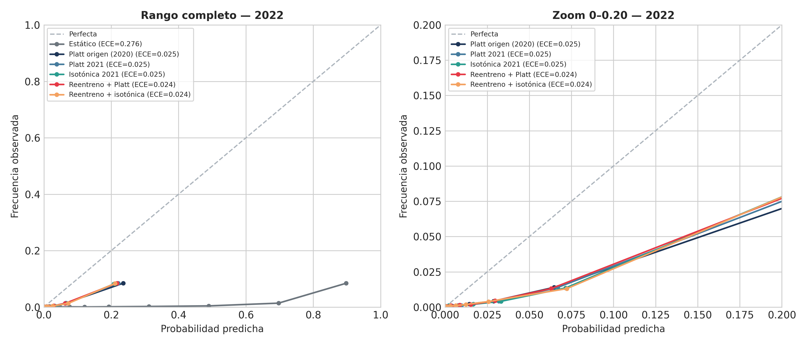
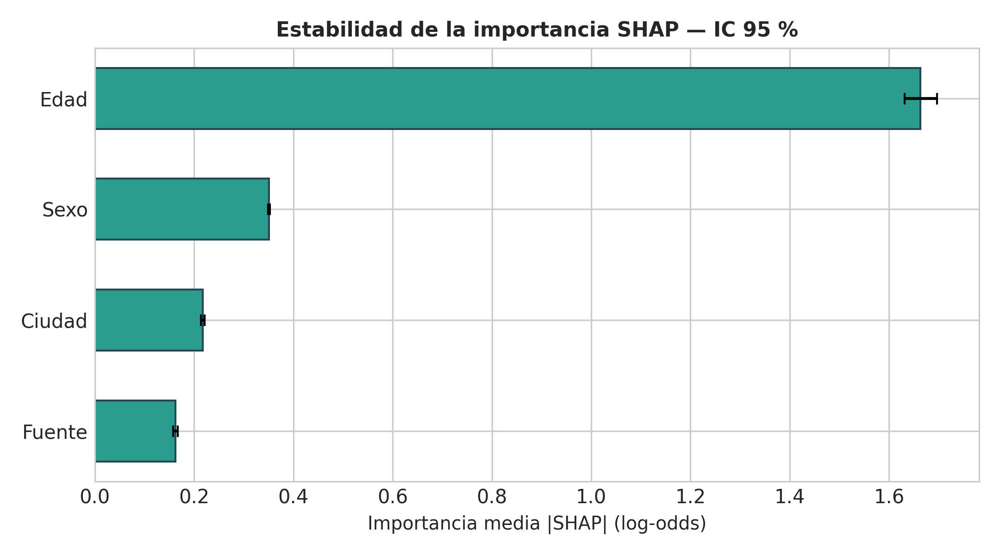
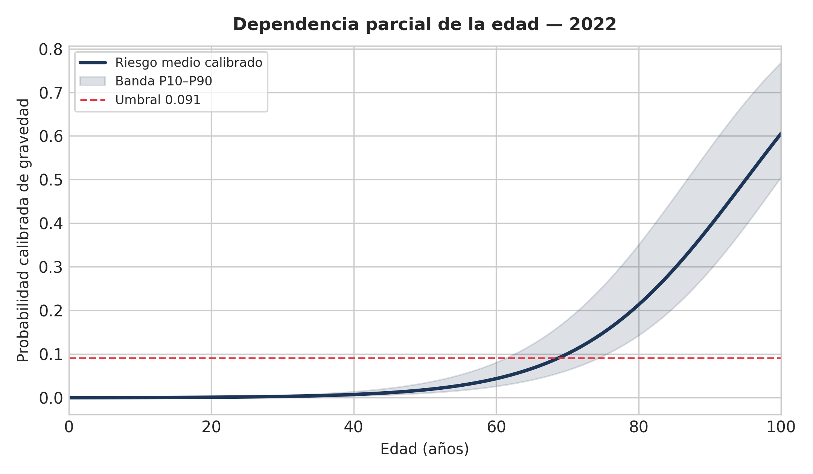
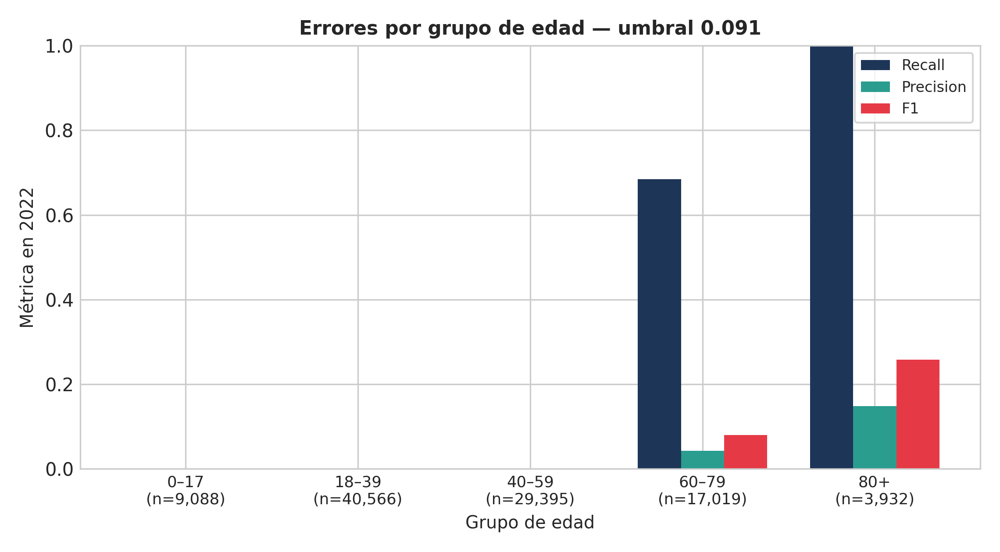

El problema: cambió la población o cambió el riesgo
Tres cambios distintos
- P(X): cambian las covariables de entrada.
- P(Y|X): cambia la relación entre perfil y desenlace.
- P(Y): cambia la prevalencia.
Lo que pasó en Colombia
La población de entrada se mantuvo estable. La prevalencia cayó de 2,82 % a 1,10 % y también cambió la relación riesgo-covariables.
El monitor de P(X) no podía ver ninguno de esos dos cambios.
Jones & Farrow (2025) proponen el OCSVM como monitor de la población de entrada. El proyecto lo lleva al INS y añade la capa supervisada que falta.
El artículo base
Jones & Farrow (2025)
One-class SVM for detecting population drift in deployed ML medical diagnostics, Scientific Reports.
- OCSVM con kernel RBF, ν = 0,01.
- Se entrena con Wisconsin Breast Cancer.
- Aprende el soporte de P(X): inlier u outlier.
Supuestos y límite
- La población de entrenamiento representa el uso previsto.
- Un outlier en X es una señal de drift clínicamente relevante.
- No usa Y: no detecta cambios de prevalencia ni de P(Y|X).
El proyecto reproduce el método y lo contrasta con datos reales del INS.
Datos: 6,39 millones de casos del INS
- Fuente: Casos positivos de COVID-19 en Colombia, datos.gov.co, recurso
gt2j-8ykr. - 6.390.844 registros crudos.
- 6.311.405 después de depurar nulos y limitar a 2020-2022.
- 300.000 en la muestra final: 100.000 por ola.
Predictores: edad, sexo, ciudad y fuente de contagio. Objetivo: grave (fallecido, grave o UCI).
Protocolo: entrenar, calibrar, evaluar
Partición temporal
2020 entrena2021 calibra2022 evalúa
La separación ocurre antes de cualquier transformación.
Pipeline sin fuga
StandardScaler + OneHotEncoder(drop='first') + regresión logística.
Las transformaciones se ajustan solo con el train de cada partición. El test se usa una vez.
El modelo final reentrena con 2020 + 80 % de 2021 y calibra con el 20 % restante. 2022 queda fuera.
Réplica del OCSVM: funciona como monitor de P(X)
Wisconsin
La réplica reproduce la tendencia del artículo: a más ruido, más solapamiento con la frontera y menos outliers detectados.
Colombia
- 2020 test: 98,96 % inliers.
- 2021: 99,08 %.
- 2022: 97,99 %.
Drift simulado
Con 30 % de ruido, el OCSVM baja a 72 % de inliers. Isolation Forest se queda en 100 %.
El monitor detecta el corrimiento controlado, pero no el cambio real de prevalencia.
Modelo final: reentreno + calibración Platt
Entrenamiento: 2020 completo + 80 % de 2021 (180.000 casos).
Calibración: Platt sobre el 20 % de 2021 (20.000 casos).
Umbral: t* = 1 / (1 + 10) = 0,0909
Costo de un falso negativo diez veces mayor que el de un falso positivo.
Calibración: el modelo crudo no se puede leer como riesgo

- Modelo crudo: media 0,287 con prevalencia 0,011.
- Platt de origen: Brier 0,0126, ECE 0,025.
- EM falló: 0 en 2021, sobreestimó en 2022.
- Beta mejoró Brier, pero bajó F1. Se descartó.
Brier skill -0,098: el valor está en el ranking.
Interpretabilidad: la edad manda


Edad: 1,663 |SHAP|, 4,7 veces la siguiente variable.
PDP: el umbral 0,091 se cruza hacia los 69 años; a los 80 el riesgo medio es 0,213.
Errores y utilidad: un modelo etario


- Recall 0 en menores de 60; 0,684 en 60-79; 1,000 en 80+.
- Beneficio neto -0,0010 con umbral 0,091; +0,0010 con 0,05.
- Sirve para triage de mayores de 60. No sirve para descartar gravedad en jóvenes.
Despliegue: Streamlit + Docker

- Tres pestañas: predicción individual, lote + monitor, ficha del modelo.
- Riesgo calibrado, advertencia por edad y control de umbral.
- Explicación en dos capas: what-if en probabilidad y SHAP en log-odds.
- Docker con healthcheck, paridad 0,0 y AppTest OK.
- Predicción en contenedor: 24,6 %, igual que en host.
Limitaciones y cierre
Limitaciones
- 2022 no es un test ciego.
- Faltan comorbilidades, vacunación y variante.
- Modelo etario, con Brier skill negativo.
- El OCSVM solo vigila P(X).
Proyección
- Holdout temporal ciego.
- Más covariables y modelos no lineales calibrados.
- Monitoreo de P(Y|X) y de calibración.
- MLOps: registro, alertas y reentrenamiento.
Idea central: vigilar las covariables no basta para saber si el clasificador sigue funcionando.